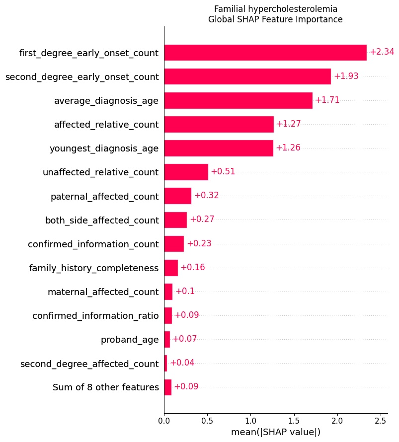
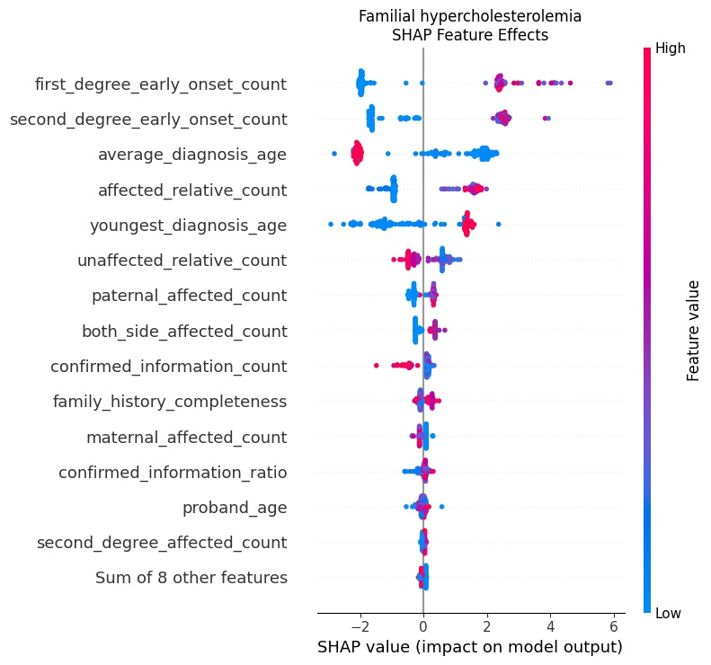
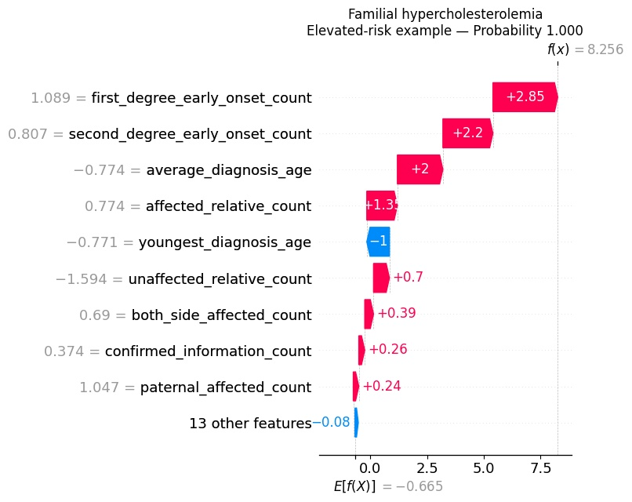
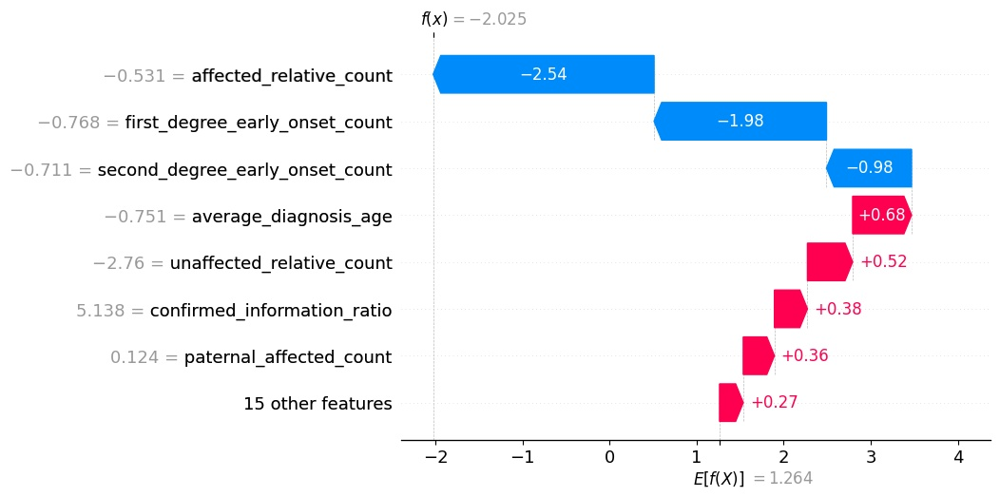

Fragmented evidence
Variant-level and statistical genetic evidence live in different knowledge sources.
An evidence-grounded research prototype combining structured family-history machine learning, SHAP explainability, ClinVar and GWAS evidence, ontology-aware evidence scoring, FastAPI, and NeuralSeek Maestro for interpretable genetic disease-risk intelligence.
Genomic disease evidence can be distributed across resources such as ClinVar and the GWAS Catalog, while family history provides patient-specific context that is often unstructured. GeneGuard explores whether these evidence streams can be integrated into an explainable research workflow for inherited disease-risk assessment.
Variant-level and statistical genetic evidence live in different knowledge sources.
Relationship degree, lineage, early onset, and diagnosis age need consistent representation.
A prediction alone is not enough; users need understandable factors and traceable evidence.
The initial research phase evaluates disease-specific models rather than forcing one model to represent all hereditary conditions.
Hereditary colorectal cancer syndrome.
Best model: Logistic RegressionInherited high cholesterol associated with early cardiovascular disease.
Best model: Gradient BoostingInherited heart-muscle disease.
Best model: Random ForestInherited cardiac arrhythmia disorder.
Best model: Random ForestGeneGuard combines curated clinical variant evidence, genome-wide association evidence, and structured family-history information into one research representation.
Candidate algorithms and feature sets were compared on validation data, then evaluated on held-out test data. The notebook confirms four selected disease-specific models with no family leakage reported.
| Disease | Selected Model | Feature Set | Test Accuracy | Test F1 | Test ROC-AUC |
|---|---|---|---|---|---|
| Lynch syndrome | Logistic Regression | Family history without derived summaries | 0.9867 | 0.9872 | 1.0000 |
| Familial hypercholesterolemia | Gradient Boosting | Family history without derived summaries | 0.9667 | 0.9669 | 0.9961 |
| Hypertrophic cardiomyopathy | Random Forest | Combined | 0.9733 | 0.9706 | 0.9955 |
| Brugada syndrome | Random Forest | Family history without derived summaries | 0.9800 | 0.9781 | 0.9987 |
Logistic Regression, Decision Tree, Random Forest, Gradient Boosting and disease-specific comparisons.
Performance was compared across feature sets before selecting the best disease-specific configuration.
Accuracy, precision, recall, F1, ROC-AUC, PR-AUC, specificity, and confusion-matrix analysis were considered in the research design.
SHAP and permutation importance are used to expose which family-history features influence model behavior. The notebook implements both global explanations and local explanations for individual elevated- and lower-pattern examples.
The Gradient Boosting model emphasizes early-onset counts, diagnosis ages, and affected-relative patterns as influential family-history signals.



The notebook evolves the genomic layer from simple retrieval into an ontology-aware evidence engine that separates exact disease evidence, disease-defining phenotype evidence, contextual traits, and cross-source gene support.
| Disease | ClinVar Score | GWAS Exact | GWAS Phenotype | Cross-Source | Overall Evidence |
|---|---|---|---|---|---|
| Lynch syndrome | 100.00 | 0.00 | 16.00 | 27.00 | 45.57 |
| Familial hypercholesterolemia | 89.41 | 0.00 | 87.81 | 46.25 | 62.74 |
| Hypertrophic cardiomyopathy | 90.82 | 70.70 | 20.59 | 19.55 | 58.61 |
| Brugada syndrome | 81.64 | 56.44 | 0.00 | 36.67 | 50.96 |
Disease-defining cross-source support identified in the ontology-aware audit.
Defining overlap across retrieved ClinVar/GWAS evidence.
Cross-source disease evidence represented by overlapping genes.
Exact cross-source overlap found in the ontology-aware evidence engine.
The research design keeps risk prediction deterministic and auditable, while NeuralSeek Maestro orchestrates structured input, evidence retrieval, API calls, and evidence-grounded explanations.
ClinVar · GWAS Catalog · Family History
Cleaning · mapping · evidence aggregation · family-history encoding
Disease-specific model · probability · confidence · SHAP
Validated request · model inference · JSON response
Workflow orchestration · evidence retrieval · grounded explanation
Risk summary · key factors · supporting evidence · limitations
The notebook validates the complete research path: family input → engineered features → ML prediction → SHAP → ClinVar → GWAS → ontology-aware evidence → final report.
The system then generates SHAP contributions and attaches genomic evidence summaries rather than returning an unexplained probability alone.

The research materials distinguish completed prototype components from planned scientific validation and production-oriented work. This distinction is preserved here rather than presenting future work as finished.
The family-history probability models were trained using synthetic family-history records.
The genomic layer summarizes the supplied ClinVar and GWAS datasets; it does not sequence or interpret an individual's genome.
Outputs are research-oriented model and evidence summaries and must not be used for diagnosis or treatment selection.
The system exposes evidence coverage, warnings, feature contributions, and limitations instead of presenting a single opaque score.
Developed during my AI Agent Developer internship at NeuralSeek as a research prototype exploring how machine learning, genomic evidence, explainable AI, APIs, and agentic orchestration can be combined into a grounded genetic disease-risk intelligence workflow.